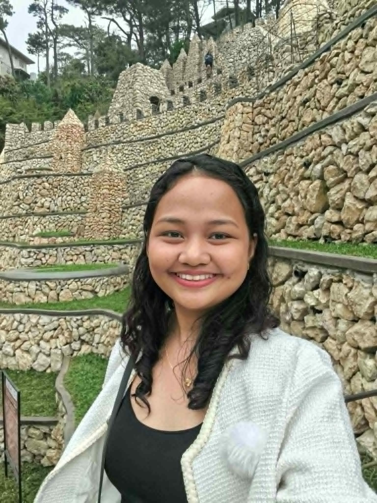
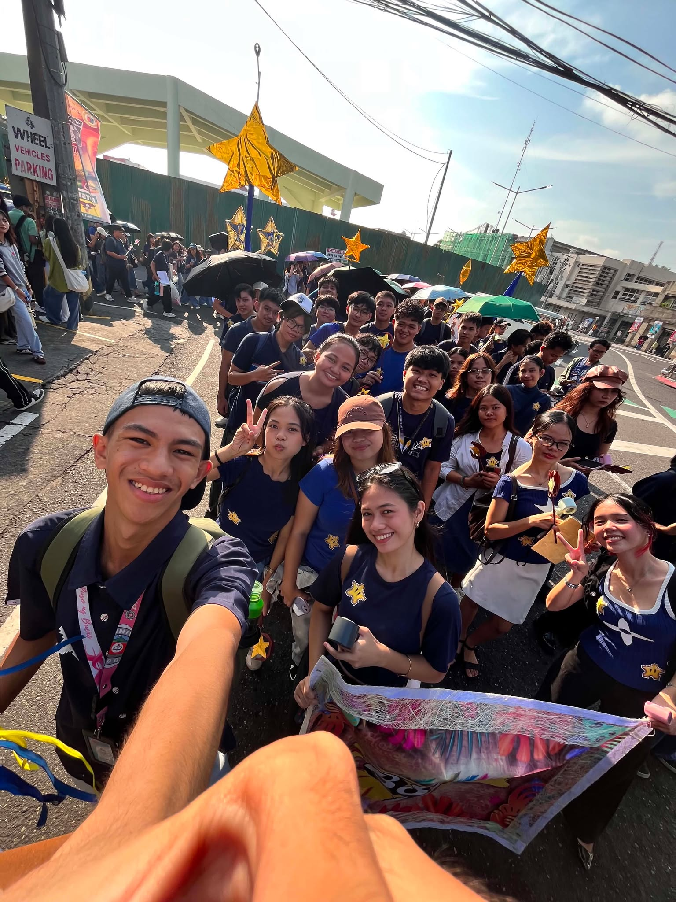
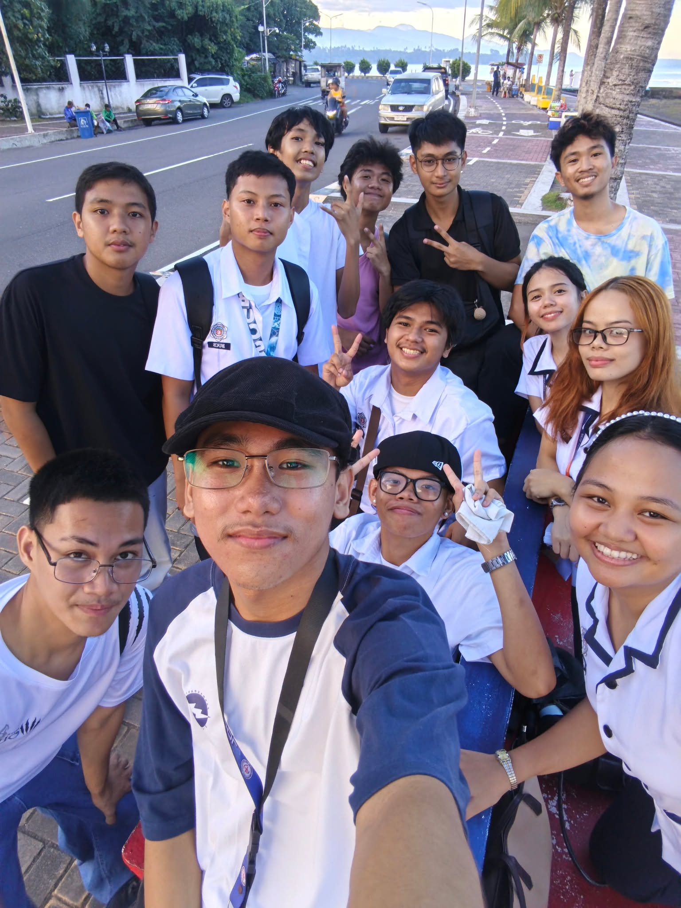
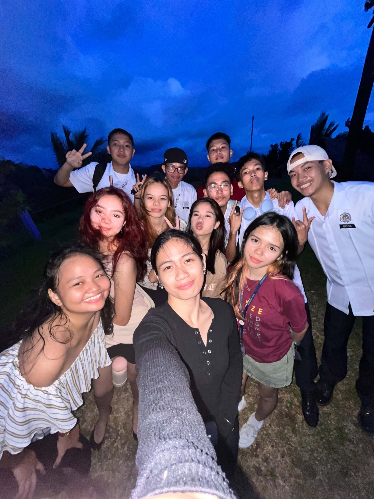
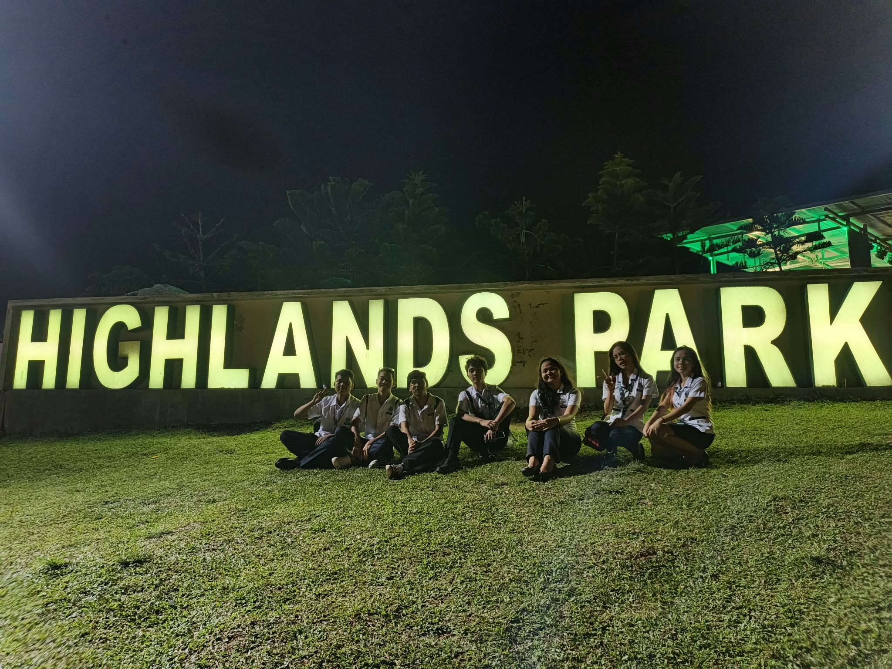
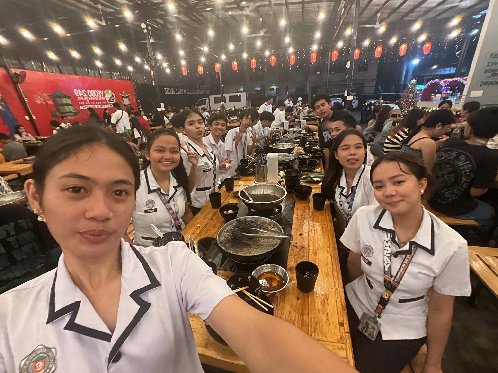
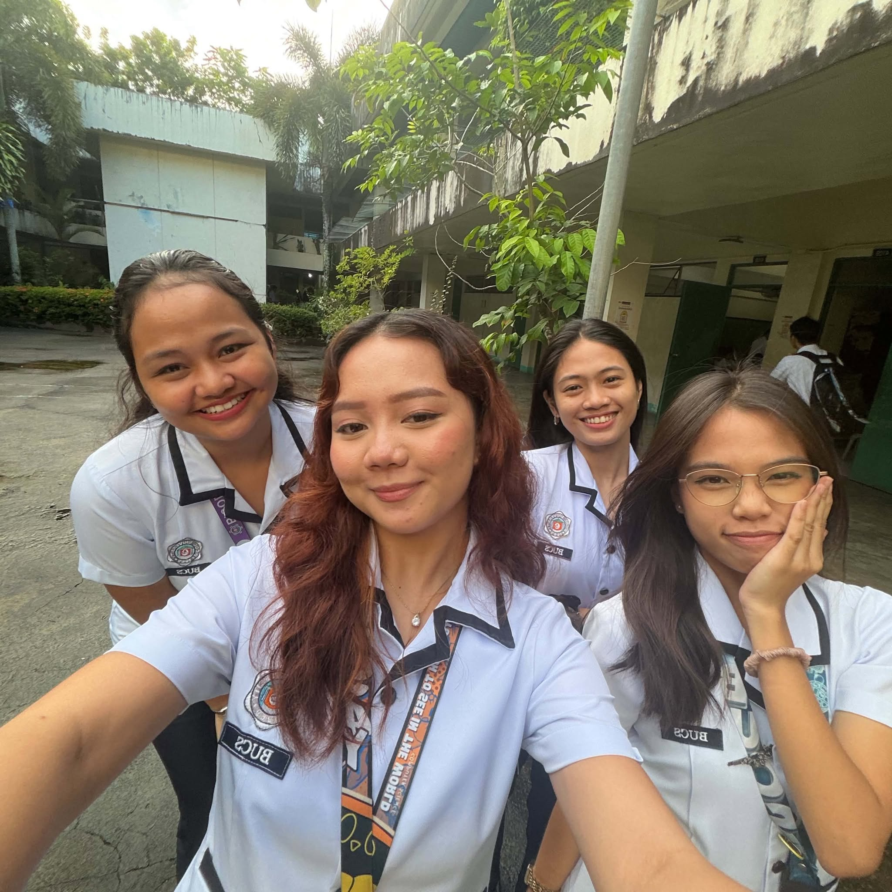

Reading
Reading allows me to explore worlds beyond my own. Stories give me different perspectives, ideals to live by, and little pieces of myself to discover.
A LITTLE GLIMPSE INTO MY WORLD
"What a privilege to be tired from the things you once prayed for."
A little space where I share the things I love, the person I am becoming, and the dreams I hope to pursue.
GET TO KNOW ME

Hello! My name is Mitch A. Nuñez. I am a first-year BSCS student at Bicol University. I'm from Legazpi City, Albay. My zodiac sign is Aries, I can finish a book in one sitting, and I love to smile. I chose Computer Science because I wanted to be in the technology field, and I hope to learn enough skills to provide value in this industry.
If I had to describe myself in one sentence, I would say that I am someone who feels deeply, dreams endlessly, and finds purpose in making a difference in other people's lives.
MY ACADEMIC JOURNEY
Applying to Bicol University and pursuing Computer Science were decisions I wasn't entirely sure about. I once envisioned myself discovering new combinations of elements to develop a new drug. Pharmaceutical Sciences was a field I had always dreamed of pursuing, and honestly, it remains my academic TOTGA. Eventually, I found myself in Computer Science. At first, I questioned whether I truly belonged in this field, especially since I had little experience with programming. But as time passed, I began appreciating what I learned, the challenges that pushed me to think differently, and the satisfaction of understanding something I once found difficult.
I'm still learning, making mistakes, and sometimes questioning myself, but I'm doing my best to embrace this journey. I've realized that life doesn't always follow the plans I've made for myself. Sometimes, I just have to trust His plans, surrender, and give my best wherever He leads me.
And look at me now. I used to wonder if I was really fit for Computer Science, but here I am, slowly finding joy in a field I once doubted myself in. Beyond the lessons, challenges, and things I get to learn, I'm also grateful for the people I've met along the way. People I probably wouldn't have known or shared memories with if the Lord hadn't brought me here. I never expected this path to give me not only opportunities to grow, but also friendships, laughter, and moments I'll always look back on with gratitude. Perhaps this is one of the beautiful things about God's plans: sometimes, He takes us somewhere we never imagined and gives us reasons to be thankful that we went.






BEYOND THE INTRODUCTION
I'm a living paradox. I'm introverted and outspoken at the same time. There are days when I want nothing more than to enjoy my own company, but there are also days when I want to be surrounded by people and make memories with them. I have a love-hate relationship with people; I love them, but sometimes, I hate what they do to one another and to the world we live in.
I see my purpose as being a little light in someone's life. If I can help, I will; if I have something to give, I gladly will. I love spoiling the people dear to me and making others feel appreciated. I'm straightforward, a little impulsive, and someone who values honesty. I'm also like a sponge when it comes to emotions. I easily sense even the slightest shift in someone's mood or the atmosphere around me. I'm a crybaby, a deeply caring person, and someone who tries to understand even when things aren't easy.
However, being understanding doesn't mean I never get tired. Sometimes, I feel that the effort I give isn't reciprocated. I tend to let things slide until I reach my limit, and I'm slowly learning to communicate instead of keeping everything to myself. Despite that, I don't think I can ever love halfway. I express love through random acts of kindness, thoughtful gestures, hugs, and even simple words like "Love youuu." I want to make others feel seen, heard, and loved, especially when they need it most. I'm still a work in progress, but I never want to lose the part of me that loves deeply and finds joy in making someone's world a little brighter.
One of the biggest lessons I've learned is that growing up means accepting that I can be many things at once. I can be caring but still have boundaries, understanding but still get tired, and confident but still have doubts. I've realized that I cannot keep giving pieces of myself to everyone while forgetting that I also deserve the same care I freely give.
I'm learning to speak up, communicate my feelings, and understand that choosing myself sometimes doesn't make me any less of a loving person. Life has also taught me that not every disappointment is a dead end, and not every unanswered dream means I've taken the wrong path. Sometimes, I just have to trust God's timing and surrender what I cannot control. As I continue growing, I aspire to become someone who is not only successful in my chosen field but also grounded in her values. I want to make my parents proud, give back, help others, and make a meaningful difference, no matter how small.
THINGS I ENJOY
These are the activities I enjoy most. They bring me peace, help me reconnect with myself, and remind me of the little things that make life meaningful. Some are more than hobbies; they are gifts I believe God has blessed me with, and I choose to use them for His glory.
Reading allows me to explore worlds beyond my own. Stories give me different perspectives, ideals to live by, and little pieces of myself to discover.
I enjoy stories filled with thrill, romance, and comedy, especially those that keep me hooked. I also love heart-wrenching dramas that make me cry buckets.
I never thought singing would become one of my interests. But after joining our church's youth ministry and music team, I discovered a talent I could use to worship Him.
Exploring new places brings me peace and reminds me how wonderful the world is. Every beautiful landscape makes me appreciate God's incredible creations.
THE LITTLE THINGS THAT MAKE LIFE BEAUTIFUL
Sometimes, happiness is found in the simplest things. These are some of the little moments and experiences that make my days a little brighter.
LOOKING AHEAD
These goals matter to me because they are things I genuinely desire and am willing to work toward. I know the road ahead may not always be easy, but I want to remain patient, disciplined, and steadfast in my faith. Through prayer, a stronger relationship with God, and the guidance of the Holy Spirit, I believe I can keep moving toward these dreams.
MY ACADEMIC LIFE
A look at my weekly academic routine and the subjects that are part of my college journey.
| Subject | Day | Time |
|---|---|---|
| CS 102: Computer Programming 1 | Monday and Wednesday | 4:00 PM - 7:00 PM |
| Phys 1: Physics for Computing | Tuesday and Thursday | 1:00 PM - 2:30 PM |
| Math 101: Mathematical Analysis | Tuesday, Thursday, and Friday | 2:30 PM - 4:00 PM; 1:00 PM - 3:00 PM |
| CS 101: Introduction to Computing | Wednesday | 9:00 AM - 12:00 NN |
| GEC 11: Understanding the Self | Friday | 9:00 AM - 12:00 NN |
| NSTP 11: CWTS | Saturday | 7:00 AM - 10:00 AM |
| PATHFit 1: Movement Competency Training | Saturday | 4:00 PM - 7:00 PM |
A FEW OF MY FAVORITES
My go-to ice cream flavor is Selecta's Avocado Dream because I love avocados and its roasted cashews.
My all-time favorite novels are the Twilight books. They were among the first books I read, and I fell in love with their characters.
Psalm 30:5 — "For His anger lasts only a moment, but His favor lasts a lifetime; weeping may stay for the night, but rejoicing comes in the morning."
One website I enjoy visiting is WEBTOON because I enjoy reading stories, especially its original series.
ACKNOWLEDGMENTS